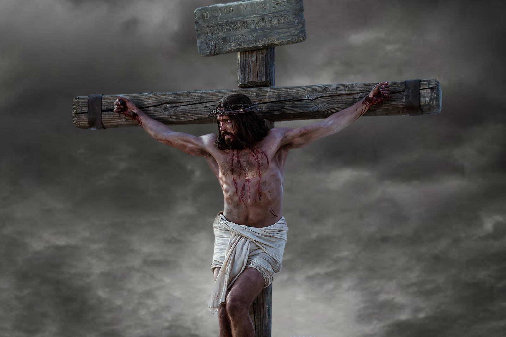
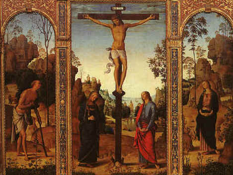
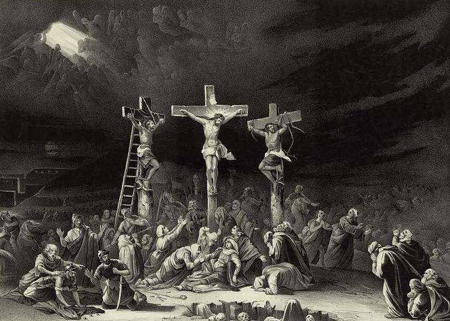

Crucifixió
La crucifixió és un mètode d'execució, on el reu és lligat o clavat en una creu de fusta, entre arbres o en una paret, i deixat allí fins a la seva mort. Aquesta forma d'execució va ser àmpliament utilitzada en l'Antiga Roma i en cultures veïnes de la Mediterrània; mètodes similars van ser inventats per l'Imperi Persa.La crucifixió va ser utilitzada pels romans fins a 337, després que el cristianisme fos legalitzat a l'Imperi Romà el 313 per l'emperador Constantí I el Gran, però abans que es convertís en la religió oficial de l'imperi.
La crucifixió rarament s'utilitzava per raons simbòliques o rituals fora de la cristiandat. Era usualment utilitzada per exposar la víctima a una mort particularment lenta, horrible (per dissuadir la gent de cometre crims semblants) i pública, utilitzant tots els mitjans necessaris per a la seva realització. Els mètodes de la crucifixió variaven considerablement depenent del lloc i el temps on s'efectuaven.
Les paraules grega i llatines que corresponen a "crucifixió" s'aplicaven a formes diverses d'execució dolorosa, des d'empalar en una estaca, clavar-los en un arbre, o en un pal.
Abans de la crucifixió, els romans acostumaven a donar fuetades (flagel·lar) al reu. Després, i durant el trajecte fins al lloc d'execució, el condemnat era obligat a carregar el travesser en els seus propis espatlles (la qual cosa segurament agreujava les ferides que ja haurien patit per la flagel·lació a què havien estat sotmesos). L'historiador romà Tàcit documenta que la ciutat de Roma tenia un lloc específic per dur a terme les execucions, una àrea especialment destinada per a la crucifixió, situat fora de la porta d'Esquilí.
La persona moltes vegades era lligada al patíbul mitjançant cordes, però l'ús de claus es documenta per diverses fonts, com en el cas de Flavi Josep, on sosté que en la Gran Revolta Jueva "els soldats enfurismats, clavaven als quals eren capturats, uns després d'altres a les creus"[3] i també s'evidencien "claus" en l'evangeli de Joan (Joan 20:25). Alguns objectes, com els claus, que s'utilitzaven en les execucions eren vists com a amulets.